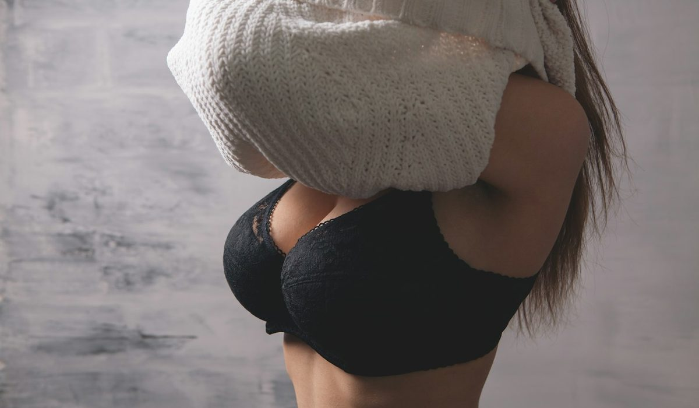
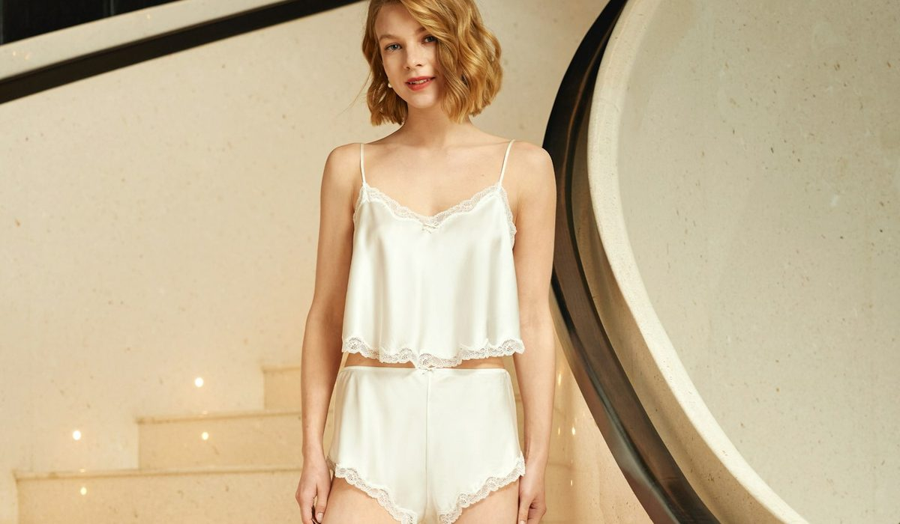

En bref
La meilleure marque de lingerie française en 2026 est Simone Pérèle, notée 8,3/10 (relevé de démonstration), pour un maintien précis et des dentelles d'une grande finesse autour de 94 € le soutien-gorge. Maison Lejaby suit de près à 8,1/10, avec des armatures parmi les plus confortables du panel. Aubade complète le podium à 8,0/10 et garde les plus belles matières.
- Sept marques comparées, du soutien-gorge à 49 € chez Princesse tam.tam à 118 € chez Aubade
- Simone Pérèle est née à Paris en 1948, Maison Lejaby en 1930 dans l'Ain, Chantelle en 1876
- Chantelle propose la grille de bonnets la plus large du panel, jusqu'au H sur ses lignes phares
- Ysé est certifiée B Corp et propose un service de réparation et de seconde vie
Sommaire de ce comparatif
Nos critères et leur poids
Combien de femmes portent un soutien-gorge qui ne leur va pas ? Les vendeuses de lingerie avancent souvent une majorité. Le premier critère d'un classement sérieux est donc le maintien, juste devant la matière, parce qu'une belle dentelle mal coupée ne se porte qu'une fois.
| Critère | Poids | Ce que nous regardons |
|---|---|---|
| Maintien | 25 % | Tenue de la poitrine, stabilité de la bande, précision des armatures |
| Matières et dentelle | 25 % | Origine et finesse de la dentelle, qualité des tulles, finition des bords |
| Confort | 20 % | Sensation après une journée, bretelles, coutures, absence de points de pression |
| Choix de tailles | 15 % | Étendue des bonnets et des tours de dos sur les lignes phares |
| Prix | 15 % | Prix public en France du soutien-gorge phare, tenue au lavage rapportée au prix |
La note globale est la moyenne pondérée des cinq sous-notes, arrondie au dixième.
Avec cette grille, la marque la moins chère ne peut pas gagner sans maintien, et la plus chère ne gagne pas sur la seule dentelle. Les trois premières se tiennent en 0,3 point, ce qui dit bien la qualité du savoir-faire français sur ce produit. Les écarts se creusent ensuite sur deux critères, la largeur de la grille de bonnets et le prix, où les maisons de bas de tableau perdent des points sans démériter sur la matière.
Le classement des marques de lingerie française
01Le meilleur maintien94 €, bonnets A à G8,3/10
02Le plus confortable à armatures92 €, bonnets A à F8,1/10
03Les plus belles matières118 €, dentelles et broderies8,0/10
Simone Pérèle prend la première place. La maison parisienne, fondée en 1948 par une corsetière, a gardé une approche de couture, avec des bonnets construits en plusieurs pièces qui épousent la poitrine sans la comprimer. Son soutien-gorge phare tourne autour de 94 €, et ses lignes les plus larges montent au bonnet G.
Maison Lejaby suit à 8,1/10. Née en 1930 dans l'Ain, elle soigne particulièrement le confort des armatures, souvent gainées et plus souples que la moyenne. À 92 € environ, elle offre le meilleur rapport entre confort et prix du podium.
Aubade complète le podium à 8,0/10. C'est la marque des matières, dentelles fines, broderies, transparences travaillées. Le maintien est un peu moins précis que chez les deux premières sur les fortes poitrines, et le prix d'entrée plus élevé, autour de 118 €.
Le tableau comparatif des 7 marques
Chaque ligne correspond au soutien-gorge le plus représentatif de la marque, au prix public relevé en France. Les sous-notes par critère suivent.
| Marque | Note /10 | Soutien-gorge phare | Bonnets | Matière signature | Le point fort |
|---|---|---|---|---|---|
| Simone PérèleNotre choix | 8,3 | 94 € | A à G | Dentelle et tulle brodé | Le maintien couture |
| Maison Lejaby | 8,1 | 92 € | A à F | Dentelle et microfibre | Le confort des armatures |
| Aubade | 8,0 | 118 € | A à F | Dentelle fine et broderie | Les plus belles matières |
| Chantelle | 7,9 | 79 € | A à H | Dentelle et microfibre lisse | Le choix de tailles |
| Princesse tam.tam | 7,6 | 49 € | A à D | Coton et dentelle légère | Le prix d'entrée |
| Maison Close | 7,5 | 98 € | A à E | Dentelle et tulle graphique | Le dessin le plus créatif |
| Ysé | 7,4 | 75 € | A à E | Tulle et dentelle souple | Le confort sans armature |
Prix publics constatés en France sur le soutien-gorge phare de chaque marque, hors soldes et hors outlet. Bonnets sur la ligne la plus large. Notes et prix, relevé de démonstration du 4 octobre 2026.

| Marque | Maintien | Matières et dentelle | Confort | Choix de tailles | Prix |
|---|---|---|---|---|---|
| Simone Pérèle | 8,6 | 8,8 | 8,2 | 8,4 | 7,0 |
| Maison Lejaby | 8,4 | 8,5 | 8,0 | 8,0 | 7,2 |
| Aubade | 7,9 | 8,9 | 7,6 | 7,8 | 7,3 |
| Chantelle | 8,2 | 7,6 | 7,8 | 8,4 | 7,8 |
| Princesse tam.tam | 6,9 | 7,4 | 8,2 | 6,8 | 9,0 |
| Maison Close | 7,3 | 8,6 | 7,4 | 6,9 | 6,9 |
| Ysé | 6,8 | 7,6 | 8,4 | 6,4 | 7,9 |
Sous-notes sur 10 par critère, pondérées selon le tableau des critères pour obtenir la note globale.
Chantelle mérite une lecture attentive. Quatrième au global, elle est la meilleure du panel sur le choix de tailles avec Simone Pérèle, et son maintien est le troisième du classement. Pour une poitrine généreuse, c'est souvent la première maison à essayer, d'autant que son soutien-gorge phare coûte autour de 79 €.
Dentelle, armatures, ce qui fait la différence
Une lingerie française se reconnaît d'abord à la main. La dentelle de Calais, tissée sur des métiers Leavers, a un relief et une souplesse qu'une dentelle imprimée n'imite pas. Mais la matière ne fait pas tout.
- Un bonnet en trois pièces ou plus suit mieux la forme de la poitrine qu'un bonnet moulé d'une seule pièce.
- Une armature gainée de tissu et bien placée ne doit jamais toucher le sein ni l'aisselle.
- La bande de dos porte environ quatre cinquièmes du maintien, les bretelles seulement le reste.
- Un lavage à la main ou en filet à 30 degrés double la durée de vie d'un soutien-gorge en dentelle.
Sur ces points, Simone Pérèle et Maison Lejaby font jeu égal. La première construit des bonnets plus enveloppants, la seconde des armatures plus douces, et les deux tiennent bien au lavage quand on respecte l'étiquette. Après six mois de port régulier, ce sont les deux maisons du panel dont la bande garde le mieux son élasticité, celle qui se détend toujours la première.
Maison Close, maison parisienne créée en 2007, pousse le plus loin le dessin créatif et sensuel, avec des tulles et des dentelles graphiques qui se montrent sous une chemise ouverte. Son soutien-gorge phare se situe autour de 98 €. Ysé a pris le chemin inverse, avec des tulles souples et beaucoup de modèles sans armature, très appréciés des petites et moyennes poitrines.
« J'ai longtemps cru que je faisais un 90B. Une essayeuse m'a mise dans un 85D, et j'ai compris pourquoi mes bretelles glissaient. » Une lectrice, 44 ans, Bordeaux.
Quel prix pour une belle lingerie française
L'écart va de un à deux et demi entre le soutien-gorge phare de Princesse tam.tam, autour de 49 €, et celui d'Aubade, autour de 118 €. Entre les deux, le gros du marché se situe de 75 à 100 €, là où se trouvent Chantelle, Ysé, Maison Lejaby, Simone Pérèle et Maison Close.
| Budget | Marques du panel | Ce que vous obtenez |
|---|---|---|
| Moins de 60 € | Princesse tam.tam | Des cotons et dentelles légères, un confort de tous les jours, peu de grandes tailles |
| De 70 à 100 € | Chantelle, Ysé, Maison Lejaby, Simone Pérèle, Maison Close | Le meilleur équilibre entre maintien, matière et durée de vie |
| Plus de 110 € | Aubade | Les dentelles et les broderies les plus travaillées |
Prix publics constatés en France sur le soutien-gorge phare, hors soldes.

Princesse tam.tam, qui appartient aujourd'hui au même groupe que Comptoir des Cotonniers, joue la carte du quotidien. Ses modèles en dentelle légère se portent sans y penser, mais la grille s'arrête vite au-delà du bonnet D. Pour un premier achat de qualité, c'est une porte d'entrée raisonnable.
Comment choisir selon sa morphologie
Pour une poitrine généreuse
Commencez par Chantelle et Simone Pérèle, qui montent jusqu'au bonnet H et G sur leurs lignes phares. Cherchez un bonnet en plusieurs pièces et une bande large.
Pour une petite poitrine
Ysé est la plus à l'aise sur ce terrain, avec des triangles et des corbeilles sans armature. Princesse tam.tam est une alternative plus accessible.
Pour une lingerie qui se voit
Aubade pour la dentelle et les broderies, Maison Close pour un dessin plus créatif. Les deux se portent sous une blouse transparente ou un décolleté ouvert.
Pour offrir
Offrir de la lingerie suppose de connaître la taille exacte, ce qui est rarement le cas. Mieux vaut choisir une pièce sans bonnet à taille unique ou à grille souple, un body en dentelle, une nuisette, un bas de pyjama en soie, ou passer par une carte cadeau quand la maison en propose une. Aubade et Simone Pérèle ont les écrins les plus soignés, Princesse tam.tam les prix les plus doux pour un premier cadeau, autour de 49 € la pièce.
Pour porter du matin au soir
Maison Lejaby. Ses armatures gainées et ses bretelles bien réparties font oublier le soutien-gorge après une journée de bureau. C'est la marque que nous conseillons pour un modèle à porter tous les jours.
Notre verdict
Sur notre relevé d'octobre 2026, Simone Pérèle est la meilleure marque de lingerie française avec 8,3/10. Elle combine le maintien le plus précis du panel, une dentelle de très belle facture et une grille de bonnets large, pour un prix de 94 € environ. Maison Lejaby et Aubade la suivent à moins de 0,3 point.
Si votre priorité est le confort au quotidien, prenez Maison Lejaby. Si votre priorité est le choix de tailles, prenez Chantelle. Si votre priorité est la beauté de la dentelle, prenez Aubade.
Questions fréquentes
Quelle est la meilleure marque de lingerie française en 2026 ?
Simone Pérèle arrive en tête de notre classement avec 8,3/10, pour son maintien, sa dentelle et une grille de bonnets qui monte au G. Maison Lejaby suit à 8,1/10 et Aubade à 8,0/10.
Quelle marque de lingerie française pour une forte poitrine ?
Chantelle propose la grille la plus large du panel, jusqu'au bonnet H sur ses lignes phares, pour un soutien-gorge autour de 79 €. Simone Pérèle monte au bonnet G avec un maintien encore plus précis, autour de 94 €.
Est-ce que la lingerie Aubade vaut son prix ?
Aubade obtient 8,0/10 et la meilleure sous-note matières du panel, 8,9/10, grâce à ses dentelles et broderies. Son soutien-gorge phare coûte autour de 118 €, soit environ 24 € au-dessus de Simone Pérèle, pour un maintien un peu moins précis.
Combien coûte un bon soutien-gorge français ?
Dans notre panel, le soutien-gorge phare va de 49 € chez Princesse tam.tam à 118 € chez Aubade. La majorité des maisons se situe entre 75 et 100 €, où l'on trouve le meilleur équilibre entre maintien et durée de vie.
Comment savoir si un soutien-gorge est à la bonne taille ?
La bande doit rester horizontale dans le dos et tenir sur l'agrafe la plus large quand le soutien-gorge est neuf. Le bonnet ne doit ni bâiller ni marquer le haut du sein, et l'armature doit reposer à plat contre le sternum.
Comment sont notées les marques de ce classement ?
Chaque marque est notée sur cinq critères, le maintien (25 %), les matières et la dentelle (25 %), le confort (20 %), le choix de tailles (15 %) et le prix (15 %). La note globale est la moyenne pondérée de ces sous-notes, et notes et prix proviennent d'un relevé de démonstration du 4 octobre 2026.
Notre méthode
Ce classement repose sur des relevés faits sur les sites officiels et en boutique, refaits chaque mois.
- Les prix sont relevés sur les sites officiels des marques en France, hors soldes et hors code promo, à la date indiquée
- Les matières, l'origine de fabrication et les dimensions sont celles affichées sur les fiches produit
- Chaque sac est porté et rempli en conditions réelles, ordinateur, trousse, gourde et parapluie compris
- Les avis clients vérifiés sont lus un par un sur la tenue des anses, des coins et des finitions
- Les services (livraison, retours, réparation, seconde main) sont testés sur une commande réelle par marque